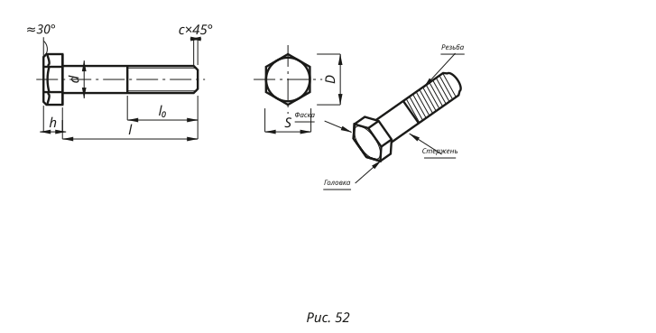

01 Чертёж

// начерти — параметрический SVG по ЕСКД: реальные
<line>,
<polygon>, <circle>. Все размеры — в соответствии с §1
JSON-константами (scale_px_per_mm = 3, stroke ∈ {2.4, 1}, шрифт
'PT Sans' italic 15 px). Один цвет — #1A1A18, никаких градиентов или
скруглений. Стрелки — единый <marker id="ar">.
02 Спецификация (Таблица 10)
| Диаметр резьбы, d | 10 |
| Шаг резьбы, P (крупный) | 1,5 |
| Длина стержня, l | 50 |
| Длина резьбы, l₀ | 26 |
| Размер под ключ, S | 17 |
| Диаметр описанной, D | 18,7 |
| Высота головки, h | 7 |
| Фаска, c × 45° | 1,5 |
Размеры под ключ и описанной окружности — из Таблицы 10 ГОСТ 7798-70. Длина резьбы l₀ для М10×50 — 26 мм по ГОСТ (полная резьба до l ≤ 125 мм).